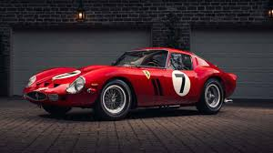

Se o espírito da Ferrari pode ser sintetizado em apenas uma macchina, esta é a 250 GTO. O carro atingiu a perfeição em equilíbrio dinâmico, leva nota máxima em apelo visual e fez história.
Construída entre 1962 e 64, foi a última Ferrari com motor dianteiro (V12) projetada para corridas e deu à marca do Cavallino Rampante três títulos consecutivos no mundial de Gran Turismo.
